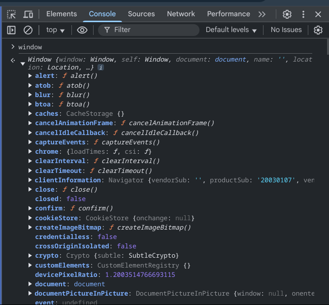
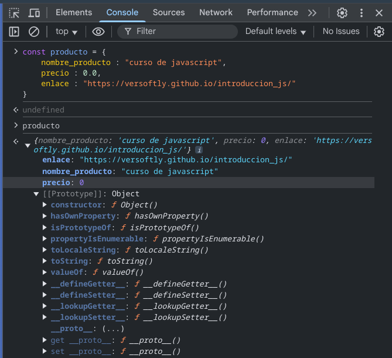
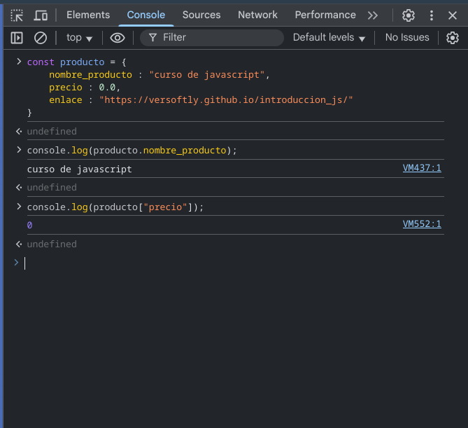

En JavaScript Existen
3 formas de crear variables. En la nueva version
apartir de emac script 6 existen 2 formas.
La que ya no se utiliza inicia con 'var'
'var' es la palabra reservada para indicar que queremos crear una variable y seguido de var escribimos el identificador o nombre de la variable ejemplo : var miVariable
Puedes asignar un valor o no de esta manera sin valor var mivar; con valor var mivar = "soy una variable"; en este caso la variable sera del tipo string (cadena de caracteres) puedes utilizar comillas simples '' o comillas dobles "" no olvides agregar el ; al final de cada sentencia, es muy importante.
Puedes crear mas de una variable en una sola linea de codigo separando cada nombre con , asi var var1,var2,var3; por ejemplo.
Las variables (nombre o indentificador) pueden tener letras , numero y algunos caracteres especiales. pero los nombres de variables no pueden iniciar con numeros o caracteres. si intentas crear una variable iniciando con numeros o caracteres te marcara un error de sintaxis.
un _ si esta permitido : var _var1; "underscore" se le conoce al utilizar _ en los nombres de las variables. el estilo mas famoso es el camel case el cual consiste en colocar la primer letra mayuscula de cada palabra : var miVar; otro estilo utilizado es el pascal case el cual consiste en colocar la primer letra mayuscula de cada palabra : var MiVar; este estilo es recomendable para las clases(programacion orientada a objetos). y tambien esta el lowercase el cual consiste en escribir puras letras minusculas : var mivar; en JavaScript es raro utilizarlo deacuerdo con lo que los expertos de la industria nos inculcan.
Las variables en js son case sensitive lo que quiere decir que por ejemplo si tenemos una variable producto y Producto el lenguaje las interpretara como variables diferentes, pasara lo mismo con las funciones y clases.
al igual que var las variables con let puedes asignarles un valor let var = 'valor'; o no, let var; y es correcto el programa no te mostrara ningun error de sintaxis. respecto a los numeros y caracteres las reglas son las mismas.
La palabra reservada const marca la diferencia, al utilizar const no puedes dejar la variable sin valor, es obligatorio inicializar la variable con algun valor al momento de su definición. si tu objetivo es mantener un variable inmutable se recomienda utilizar const de lo contrario utiliza let.
En conclusion la diferencia entre const y let es que const debe de ser inicializada desde el inicio con un valor y let no. otra diferencia es que no se puede reasignar el valor (es inmutable osea no se puede cambiar una ves que este es asignado), mientras que let su valor puede ser modificado en algun otro proceso del programa.
usualmente se utiliza mas const en proyectos cuando se necesita un valor fijo en varios procesos del programa.
Los strings o cadenas de caracteres es un tipo de dato o valor el cual podemos crear (asignar) de varias formas (3) unas mas utilizadas que otras.
toma en cuenta que cuando utilizad new el tipo de dato termina siendo un objeto. con la funcion console.log y la palabra reservada typeof podremos visualizar el tipo de dato de cualquier variable , ejemplo: console.log(typeof producto); utiliza la combinacion de teclas ctrl + shift + i , para ver el resultado de la funcion console.log por la consola de tu navegador en este caso chrome.
la forma mas común es utilizando comillas dobles o sencillas , toma en cuenta que no puedes iniciar con dobles y terminar con sencillas y viseversa. si inicias con '"' terminas con '"'
en algunos casos particulares necesitaras utilizar comillas dobles dentro de un string definido por comillas dobles : "string 20"" para que el programa no te marque un error necesitaras escapar las comillas utilizando el caracter slash invertido : "string 20\"" y de esta forma el string se mostrara sin error : string 20" la forma mas sensilla seria utilizar comillas simples 'string 20"'
El emtodo length en js nos sirve para obtener la cantidad de caracteres que componen a un string. para saber por ejemplo cuantos caracteres o letras tiene tu nombre y visualizar el resultado por consolo seria así : console.log("tu nombre".length);
length tiene una caracteristica que lo convierte en propiedad y es que a diferencia de otros metodos en javascript no es necesario agregarle () parentesis al final.
indexOf nos ayudara a saber si alguna palabra esta incluida en un texto. por ejemplo si tengo una variable 'js' con el texto 'aprendamos js juntos.' js = "aprendamos js juntos"; y quiero buscar la palabra juntos entonces para visualizar el resultado seria asi : console.log(js.indexOf("juntos")); el metodo te regresara un valor entero si la palabra existe dentro del texto lo cual te indicara en cual posision de la cadena esta la primer letra de esa palabra que estes buscando. Reuerda que cuando obtienes un valor mayor o igual a 0 (>=) quiere decir que la palabra si fue encontrada de lo contrario el resultado sera -1.
este metodo es mas moderno que indexOf y se utiliza para realizar la misma accion pero comoresultado obtendremos un valor booleano que quiere decir esto, en caso de que la palabra se encuentre el resutado sera true (verdadero) de lo contrario sera false (falso).
cuando defines una variable y el valor se encuentra entre "" o '' eso automaticamente convierte a la variable a tipo string para definir un numero no es necesario utilizar comillas const num = 100; ya que defines el numero const num = '100'; sera un string y no un valor numerico.
Una caracteristica de javascript sobre los numeros que lo hace diferente de alguna manera es que mientras en otros lenguajes un numero entero y uno con punto de decial serian tratados como tipos de datos diferentes enteros y floats por ejemplo o doubles en javascript todos pertenecen al mismo tipo de dato ya sea fraccion , entero , negativo , etc.
javascript al igual que todos lo lenguajes de programacion que
te permiten trabajar con numeros te da la posibilidad de realizar
operaciones de suma , resta, multiplicacion y division.
un ejemplo sencillo por ejemplo para sumar dos numero :
const num1 = 2;
const num2 = 8;
console.log(num1 + num2);
y asi con las otras operaciones
console.log(num1 - num2); resta
console.log(num1 * num2); multiplicacion
console.log(num1 / num2); division
console.log(num1 % num2); modulo
el modulo por ejemplo si dividimos 10 / 9 el resultado sera 1
por que el modulo lo que hace es devolvernos de residuo de esa division.
las opraciones matematicas son especificamente para trabajar con numeros
no es posible aplicar estas operaciones a strings.
en javacript existe algo llamado la ventana global

si buscas el objeto math en la lista de funciones podras ver todas
las funciones que pertenecen a ese objeto dentro de javascript.
por ejemplo en la consola de tu navegar si quisieras crear un numero aleatorio podrias utilizar el metodo random window.Math.random(); Math pertenece ala ventana global , puedes utilizarlo de la manera anterior o simplemente con Math.random(); usualmente el numero random nunca es mayor que 1
tambien podremos obtener el numero pi console.log(Math.PI); para redondear un numero decimal utilizamos Math.round(); 2.5 redondera hacia abajo otro metodo de redondeo es Math.ceil(2.1); este siempre redondeara hacia arriba, y Math.floor(2.9); siempre redondeara hacia abajo. Math.sqrt(200); para obtener la raiz cuadrada de algun numero, Math.abs(-300); para obtener el valor absoluto en este caso de -300 un numero negativo a 300. nomas para poner un ejemplo. Math.min(2,4,6,8,0); para obtener el numero minimo de una seire de numeros,Math.max(10,3,6,4); para obtener el numero maximo o mayor de una serie de numeros.
Ahora te mostrare una forma en que podemos ir utilizando y mezclando
funiones y operadores para obtener resultados los cuales nos ayudaran
ha realizar operaciones mas complejas por ejemplo retomando el metodo
random ,floor del objeto Math y el operador de multiplicacion para obtener
un numero aleatorio mayor a 1 por ejemplo.
console.log(Math.floor(Math.random() * 30));
Esto realmente es programar muchas veces tomar codigo ya existente,
funciones propias del lenguaje unir estas piezas y asi lograr tus objetivos o
resultados deseados.
para incrementar en una unidad se utilizan los operadores ++
el operador ++ lo puedes utilizar de dos formas una es por ejemplo :
tenemos una variable numero y la incrementamos de esta manera numero++
o de esta otra ++numero.
cual es la diferencia ? si utilizas numero++ y por ejemplo
visualizas la variable antes del incremento console.log(numero); , la incrementas
console.log(numero++); en este punto la variable mantendra su valor y la proxima ves
que la visualices por consola ya se mostrara el valor incrementado. y si quieres que
se incremente sin mantener su valor utiliza console.log(++numero);
para la operacion opuesta tenemos e operador -- la logica es la misma para ambos casos.
Para aumentar en mas de una unidad si tienes una variable numero y quieres que esta vaya aumentando de 10 en diez utilizas la combinacion del operador + y =, numero += 10; la operacion anterior le sumara 10 unidades cada ves que se ejecute. igual para restas , multiplicacion , etc. -= , *=
que es la concatenacion ? la concatenacion no es mas que sumar
dos cadenas de caracteres y esto lo hacemos con el operador +
console.log("hola" + 'mundo'); por ejemplo nos dara como resultado
el texto concatenado (sumado) 'holamundo'.
Recuerda que el espacio en blanco tambien es un caracter. la ','
tambien se utiliza para concatenar en javascript el resultado es el mismo que si
utilizas el operador +
O tambien conocidos como string literals es la forma mas moderna
de concatenar textos console.log(``); se utilizan el caracter de la comilla
invertida. por ejemplo ahora tendremos que utilizar los caracteres ${} para
concatenar variables en el template por ejemplo
console.log(`mi nombre es : ${nombre}`);
los tipo de datos bool , son un tipo de dato
que puede tener solamente dos estados true o false.
el valor tiene que ser true o false sin comillas , si
utilizas comillas ya no sera un bool y pasara a ser un string.
para comprobar lo anterior puedes utilizar la propiedad (palabra reservada)
typeof console.log(typeof true); y console.log(typeof "true");
otra forma de crear un boolean en javacript es utilizando el constructor
de la clase , no te preocupes que es un constructor o una clase eso lo estudiaremos
en el los temas de objetos y programacion orientada a objetos.
let booleano = new Boolean(true);
lo anterior en realidad sera un objeto , consolo.log(typeof booleano);
Un objeto en javascript es una variable la cual
encapsula otras variables y sus valores. la sintaxis para
declarar un objeto es la siguiente :

Las variables dentro del objeto se conocen como propiedades. se utiliza
la coma ',' para marcar el limite de una propiedad.
hay dos formas para acceder a las propiedades de el objeto una es con . y la otra con []. 